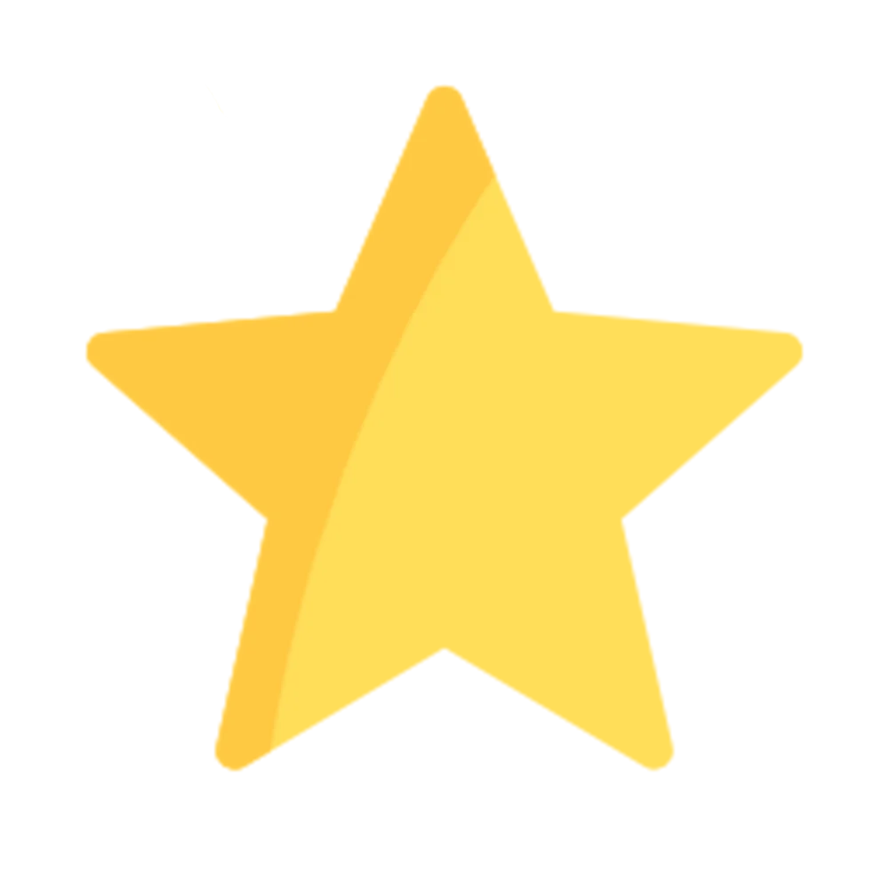

Nourhene BABA
Developpeuse web

formation
Diplome dingenieur en telecommunication; ecole nationale dingenieurs de Tunis, tunisie , 2009.
Experience
2017 - 2020
conseillere des services publics à l'ecole nationale des finances, tunisie
- preparation de mise en oeuvre du projet national de la formation en ligne
- creation d'une application de gestion des xamens: suivi, mise a jour et statistiques
2014 - 2017
conseillere des services publics à la trisorie regionale des finances de Nabeul, tunisie
- suivi des recouvrements a l'echelle regionale
- recoupements et statistiques
- formation des fonctionnaires en outils du bureautque
certificats et attestations
attestation de reussite java 1
attestation de reussite java 2
Competence
logiciels
visual basic, .NET, Gradle
langages de programmation
C,C++, C#, Java, HTML5, CCS, JAVASCRIPT
langues
- francais: 
Attestion voltaire en 2016,score 894/1000, avec felicitation
- anglais:
niveau basique
- arabe:
langue maternelle
about me
contact me